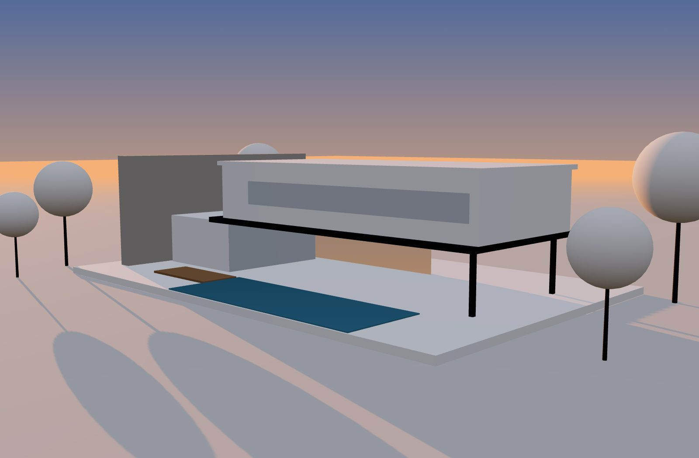
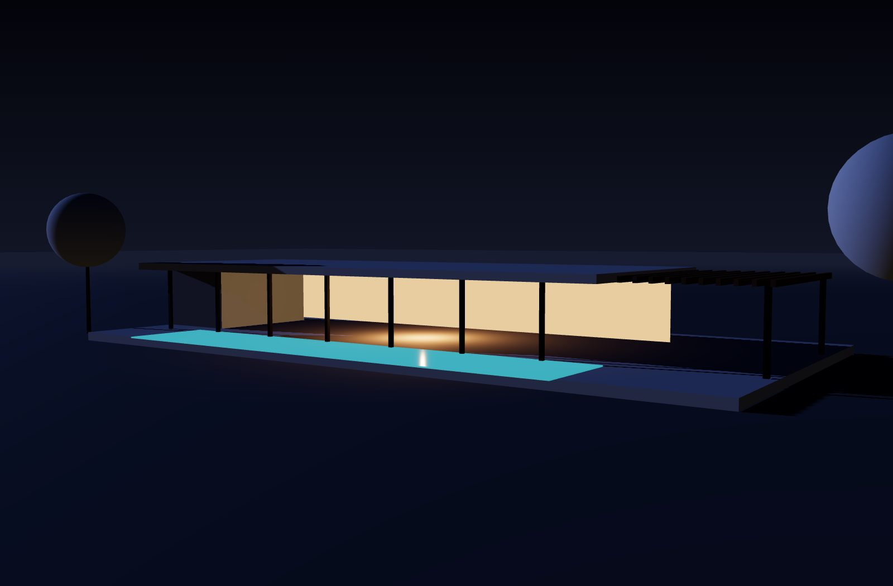
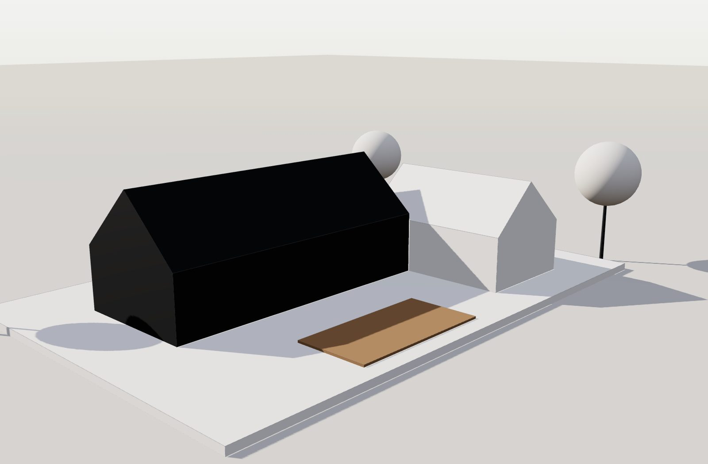
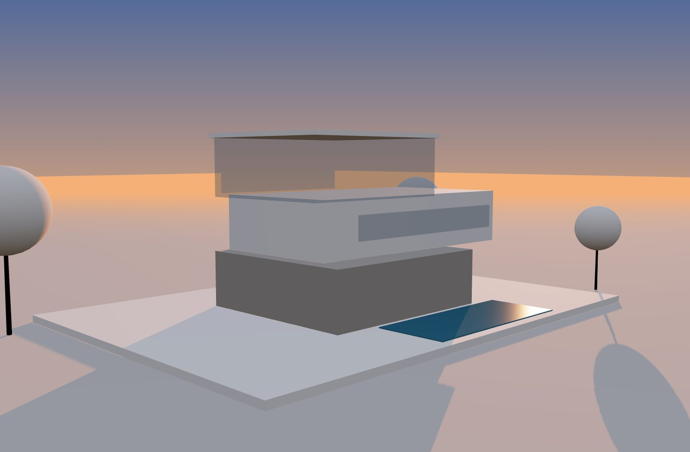

Дом в Репино
Второй этаж нависает над террасой на семь с половиной метров. Под ним — летняя гостиная у бассейна.
- Площадь
- 286 м²
- Год
- 2025
- Работы
- Архитектура, интерьеры

Архитектурное бюро. Частные дома, интерьеры и реконструкция в Петербурге и области.
Проверяем пропорции, виды из окон и тени на участке до того, как залит первый кубометр бетона.
Считаем инсоляцию по часам. Вечернее солнце приходит в гостиную, а не в спальню в шесть утра.
Ведём объект до дня, когда в окнах зажигается свет. Авторский надзор входит в каждый проект.
Смотреть проектыМы небольшое бюро: архитектор, дизайнер интерьеров и инженер. Берём не больше пяти объектов в год и ведём каждый сами — от первого обмера участка до последней розетки на стене.
Второй этаж нависает над террасой на семь с половиной метров. Под ним — летняя гостиная у бассейна.

Гостевой дом со сплошным остеклением на воду. Пергола из лиственницы закрывает террасу от полуденного солнца.

Два объёма под двускатными крышами: чёрный — для семьи, белый — гостевой. Между ними стеклянная галерея.

Три смещённых этажа, каждый развёрнут на свою сторону: лес, залив и закат. Каменное основание из местного гранита.
Планировки, фасады, конструкции и инженерия. Комплект чертежей, по которому дом строят без догадок.
от 3 месяцевСвет, материалы, мебель и смета — до конкретного артикула и магазина.
от 2 месяцевОбследование, проект изменений и согласование с надзорными органами.
по объектуВыезжаем на стройку и следим, чтобы построили ровно то, что нарисовали.
до сдачиЧетыре этапа. На каждом вы видите результат и решаете, идём ли дальше.
Обсуждаем задачу и бюджет, выезжаем на участок, делаем обмеры и съёмку.
1–2 неделиДва-три варианта планировки и 3D-макет. Вместе выбираем направление.
3–4 неделиПолный комплект чертежей, спецификации и смета для подрядчика.
2–3 месяцаРегулярные выезды, решения на месте и приёмка готового дома.
до сдачиОтветим в течение дня и предложим время для встречи — в бюро или на объекте.
Написать в Telegram